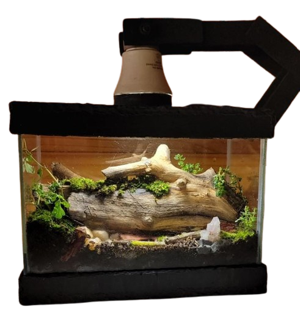

Estúdio verde


Com a ideia inicial de ser apenas uma brincadeira, um simples passatempo, foi criado o primeiro terrário, isso em 28 de abril de 2020. Desde então, o desejo por criar projetos cada vez mais bem elaborados cresceu, e a vontade de expor todos eles se caminhou ao lado. Dessa maneira, anos depois, surgia o mais novo perfil destinado aos terrários: a Estúdio Verde, EV. Christyan Eduardo foi o responsável por criar todo este projeto, e decidiu trazer toda a amostragem dos trabalhos em um perfil do Instagram (@estudio_verde_ev). Por lá, pode acompanhar diversos assuntos, projetos, curiosidades e outras informações em relação aos terrários e outros conteúdos relacionados..